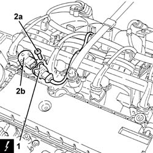

1056B48 TIMING VARIATOR SOLENOIDS - R + R
- Path
- Procedures > 10 ENGINE UNIT > 1056 PETROL INJECTION SYSTEM > 1056B MULTI-POINT INJECTION SYSTEM (MPI) > 1056B48 TIMING VARIATOR SOLENOIDS - R + R
- Kind
- repair procedure (removal / refitting; the operation number is the code)
- Applies to
- engines: 1.8 T.SPARK; all production periods
- Interactive page
- https://sloeber94.github.io/elrnDB-aGt/en/#/125002611
Applies to: all engines; all production periods
 Removing
Removing
 Refitting
RefittingEnsure that the ignition key is in the OFF postition, then disconnect the battery negative terminal.
Name | Connector | |
|---|---|---|
- | Battery |
Proceed with the removal
Op. 1016A40 IGNITION COIL COVER ON CYLINDER HEAD- R+R.
1. Disconnect the electrical connection from the variable valve timing electro-magnet.
Name | Connector | |
|---|---|---|
1 | Timing variator actuator |
2. Undo the bolts (2a) and remove the variable valve timing electro-magnet (2b).

Applies to: all engines; all production periods
Refitting
RemovingRefit the variable valve timing electro-magnet and secure by tightening the bolts to the recommended torque.
Fastening | Component | Ø | Value (daNm) | |
|---|---|---|---|---|
- | Bolt | ADVANCE VARIATOR SOLENOIDS | M7 | (Intake manifold side) 1.4 ÷ 1.7 |
Connect the electrical connection to the variable valve timing electro-magnet.
Proceed with the refitting
Op. 1016A40 IGNITION COIL COVER ON CYLINDER HEAD- R+R.
Connect the battery terminal (-).